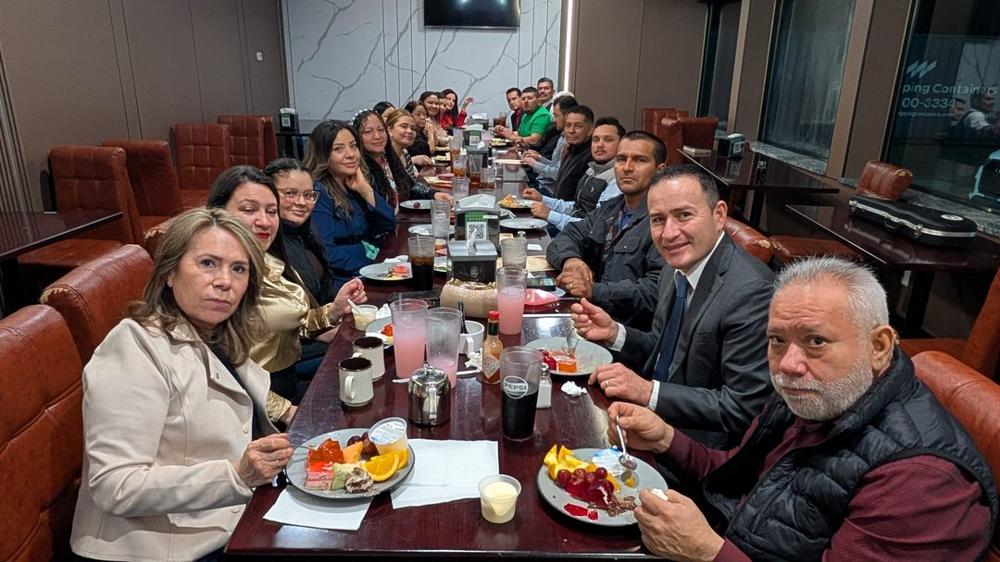
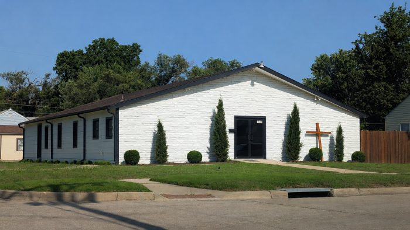
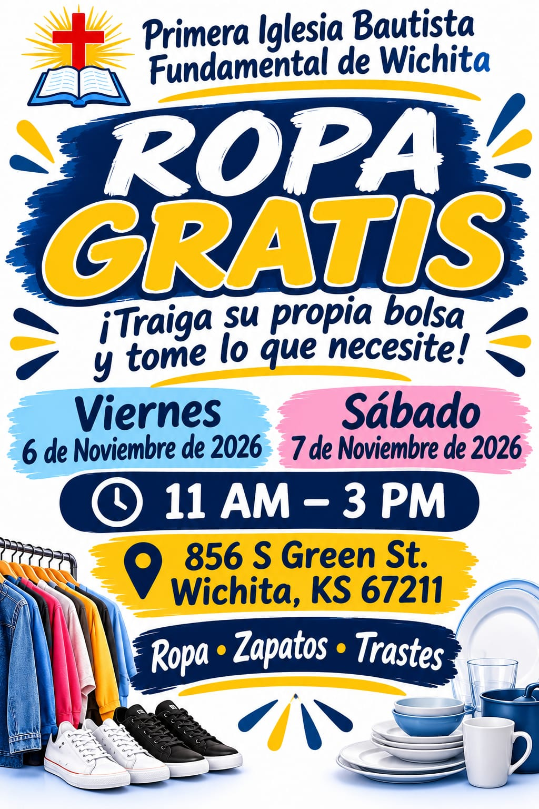
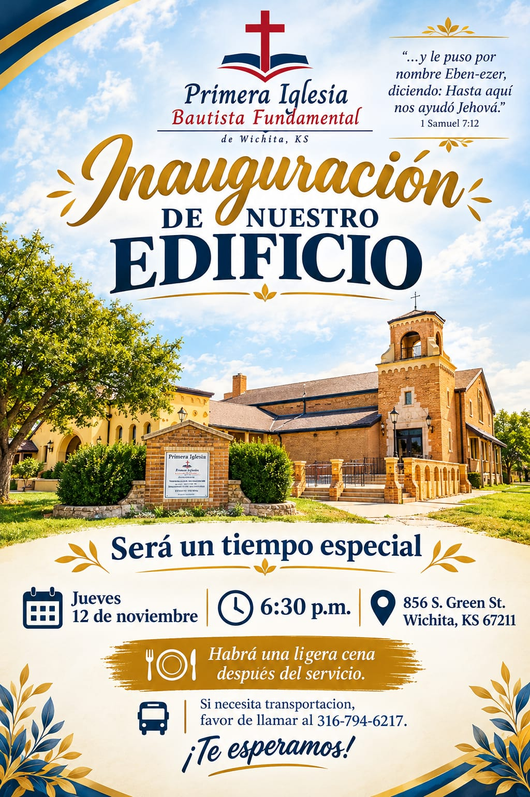
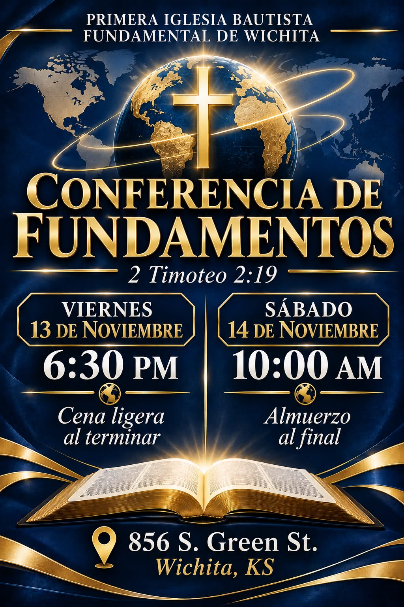
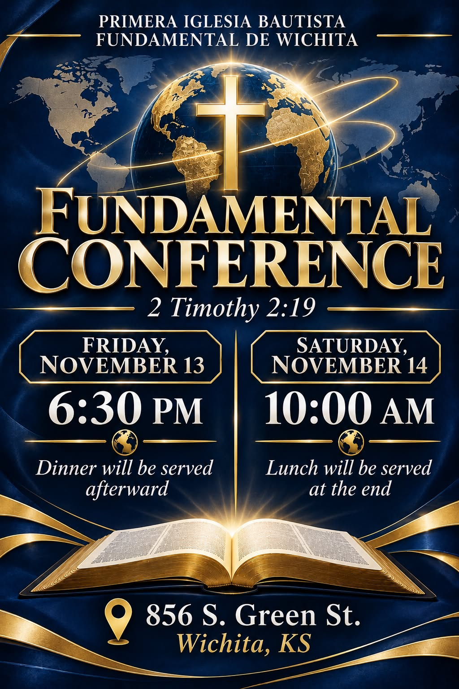
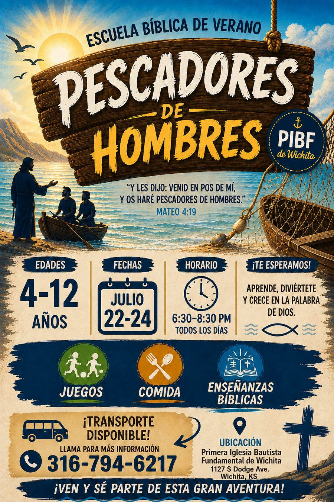
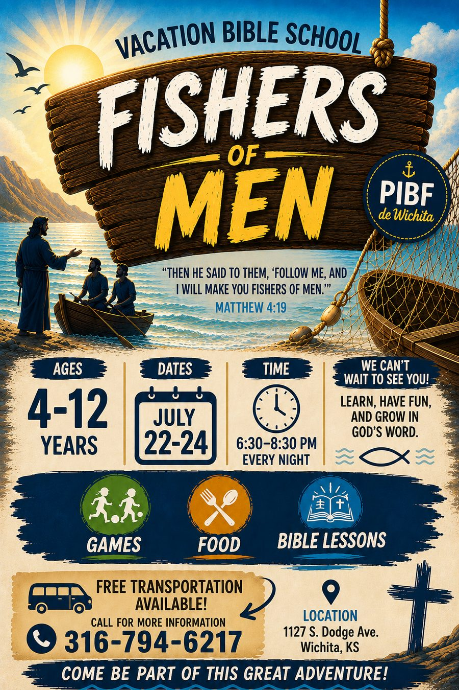
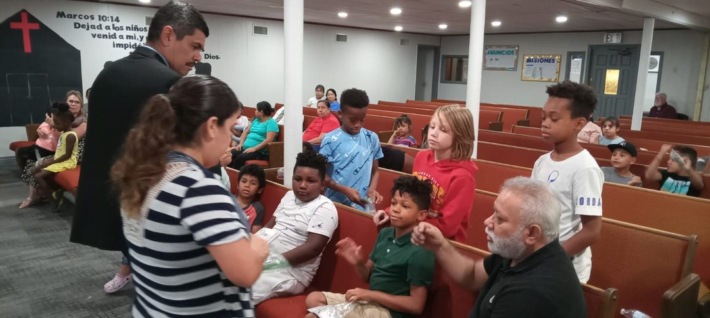
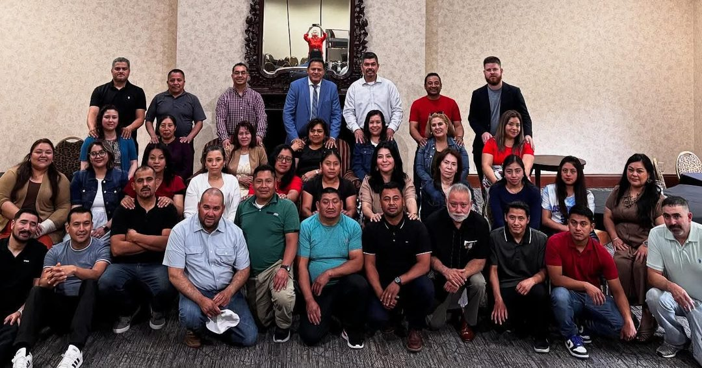

Banquete de San Valentín – Febrero 2026
Tuvimos un tiempo muy bonito en un buffet de Wichita en cuarto reservado para celebrar el amor en nuestros matrimonios, escuchar musica y cantar, y ser emocionado por el pastor.
Ver Más Fotos
Nuestra Iglesia ~ 1127 S Dodge Ave, Wichita, KS 67213
“Gracias por visitar nuestra pagina web. Es nuestra oracion que al visitar nuestra pagina usted encuentre la informacion necesaria para ayudarle a contestar sus preguntas espirituales que tenga. Nuestro deseo es exaltar el nombre de Cristo y ser de ayuda y bendicion a cada persona que venga a nuestra iglesia. Le invitamos a venir y conocernos y alabar a Cristo juntos.”
-Pastor Carlos Covarrubias
Porque de tal manera amó Dios al mundo, que ha dado a su Hijo unigénito, para que todo aquel que en él cree, no se pierda, mas tenga vida eterna.
Juan 3:16
Viernes 6 y Sábado 7 de Noviembre, 2026 · 11 AM – 3 PM

Jueves 12 de noviembre, 2026 · 6:30 p.m. · 856 S. Green St.

Viernes 13 (6:30 p.m.) y sábado 14 de noviembre (10:00 a.m.), 2026





Tuvimos un tiempo muy bonito en un buffet de Wichita en cuarto reservado para celebrar el amor en nuestros matrimonios, escuchar musica y cantar, y ser emocionado por el pastor.
Ver Más Fotos
Tema: La Armadura de Dios
Fecha: Julio 15 al 18, de 7pm a 8:30pm
*Se proveera transportación si la necesitan.

Unas parejas de la iglesia tuvieron un muy buen tiempo en Branson, Missouri refrescando sus relaciones, divirtiéndose, y escuchando la predicación que nos motivó y retó a mejorar nuestro matrimonio.
“Por tanto, id, y haced discípulos a todas las naciones, bautizándolos en el nombre del Padre, y del Hijo, y del Espíritu Santo; enseñándoles que guarden todas las cosas que os he mandado; y he aquí yo estoy con vosotros todos los días, hasta el fin del mundo. Amén.”
-Mateo 28:19-20